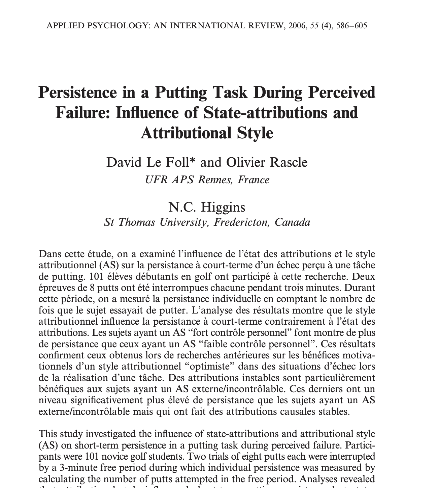

Freestyle Experimentation
Putting Teemu to the test!
![]()
Mon 30 Sep, 2024
Is Teemu wearing his golfing jumper?
Let’s do an experiment on Teemu
Time to go golfing, Teemu!
Teemu hits golf balls
Very interesting! Isn’t Teemu talented!
All done. Please collect your Nobel Prize in Stickholm!
But was that an experiment?
Let’s Manipulate Teemu!
How about we make it HARDER for Teemu?
How about we MOTIVATE Teemu?
How about we DISTRACT Teemu?
Does the putting actually matter at all?
Let’s play ball!
Now we have an experiment!
What else could we do?
What else do we need to improve this experiment?
Design 1
That was a task where we made REPEATED MEASURES on Teemu.
We didn’t really need another participant.
So the Manipulation was Within-Subject or REPEATED MEASURES
Analysis 1
with 2 conditions (A & B) manipulated within-subject, or with REPEATED MEASURES
we would use a PAIRED T-Test
But of course, we need more than Teemu, don’t we?
The Teemu Multiplier
#| '!! shinylive warning !!': |
#| shinylive does not work in self-contained HTML documents.
#| Please set `embed-resources: false` in your metadata.
#| components: [viewer]
#| viewerHeight: 600
#| standalone: true
library(shiny)
library(ggplot2)
ui <- fluidPage(
titlePanel("Putting Competition Data Visualization"),
fluidRow(
column(4,
sliderInput("mean_positive", "Mean score (Positive interaction):", min = 0, max = 100, value = 70, step = 1),
sliderInput("mean_negative", "Mean score (Negative interaction):", min = 0, max = 100, value = 60, step = 1),
sliderInput("sd_within", "Within-subject SD:", min = 1, max = 50, value = 10, step = 1),
sliderInput("correlation", "Correlation between conditions:", min = -1, max = 1, value = 0.5, step = 0.1),
numericInput("n", "Number of golfers:", value = 30, min = 2)
),
column(8,
h4("Putting Competition Data:"),
verbatimTextOutput("data_head"),
plotOutput("dist_plot", height = "300px")
)
)
)
server <- function(input, output) {
# Generate data
generate_data <- reactive({
set.seed(123) # For reproducibility
sigma <- matrix(c(input$sd_within^2,
input$correlation*input$sd_within^2,
input$correlation*input$sd_within^2,
input$sd_within^2), 2, 2)
data <- MASS::mvrnorm(input$n, mu = c(input$mean_positive, input$mean_negative), Sigma = sigma)
data.frame(
Golfer = 1:input$n,
Positive_Interaction = pmax(pmin(data[,1], 100), 0), # Clamp values between 0 and 100
Negative_Interaction = pmax(pmin(data[,2], 100), 0) # Clamp values between 0 and 100
)
})
output$data_head <- renderPrint({
head(generate_data())
})
output$dist_plot <- renderPlot({
data <- generate_data()
ggplot(data, aes(x = Positive_Interaction, y = Negative_Interaction)) +
geom_point(alpha = 0.6) +
geom_abline(intercept = 0, slope = 1, linetype = "dashed", color = "gray") +
labs(title = "Putting Scores: Positive vs Negative Crowd Interaction",
x = "Score with Positive Interaction",
y = "Score with Negative Interaction") +
theme_minimal() +
coord_fixed(xlim = c(0, 100), ylim = c(0, 100))
})
}
shinyApp(ui = ui, server = server)Paired T(eemu)-Test
#| '!! shinylive warning !!': |
#| shinylive does not work in self-contained HTML documents.
#| Please set `embed-resources: false` in your metadata.
#| components: [viewer]
#| viewerHeight: 600
#| standalone: true
library(shiny)
library(ggplot2)
ui <- fluidPage(
titlePanel("Within-Subjects RM Paired T-Test Calculator"),
fluidRow(
column(4,
sliderInput("mean_a", "Mean Condition 1:", min = 0, max = 100, value = 50, step = 1),
sliderInput("mean_b", "Mean Condition 2:", min = 0, max = 100, value = 55, step = 1),
sliderInput("sd_within", "Within-subject SD:", min = 1, max = 100, value = 20, step = 1),
sliderInput("correlation", "Correlation between A and B:", min = -1, max = 1, value = 0.5, step = 0.1),
numericInput("n", "Sample size:", value = 30, min = 2)
),
column(8,
h4("Within-Subjects T-Test Results:"),
verbatimTextOutput("ttest_result"),
plotOutput("dist_plot", height = "300px")
)
)
)
server <- function(input, output) {
output$ttest_result <- renderPrint({
set.seed(123) # For reproducibility
# Generate correlated data for condition A and B
sigma <- matrix(c(input$sd_within^2,
input$correlation*input$sd_within^2,
input$correlation*input$sd_within^2,
input$sd_within^2), 2, 2)
data <- MASS::mvrnorm(input$n, mu = c(input$mean_a, input$mean_b), Sigma = sigma)
condition_a <- data[,1]
condition_b <- data[,2]
# Perform paired t-test
t_test_result <- t.test(condition_b, condition_a, paired = TRUE)
print(t_test_result)
})
output$dist_plot <- renderPlot({
# Calculate the standard error of the difference
se_diff <- sqrt(2 * (input$sd_within^2) * (1 - input$correlation))
mean_diff <- input$mean_b - input$mean_a
# Calculate the range for x-axis
min_x <- min(input$mean_a, input$mean_b) - 3*input$sd_within
max_x <- max(input$mean_a, input$mean_b) + 3*input$sd_within
x <- seq(min_x, max_x, length.out = 1000)
y_a <- dnorm(x, mean = input$mean_a, sd = input$sd_within)
y_b <- dnorm(x, mean = input$mean_b, sd = input$sd_within)
df <- data.frame(
x = rep(x, 2),
y = c(y_a, y_b),
group = rep(c("Condition A", "Condition B"), each = length(x))
)
ggplot() +
geom_area(data = df, aes(x = x, y = y, fill = group), alpha = 0.5, position = "identity") +
scale_fill_manual(values = c("blue", "red")) +
geom_vline(xintercept = input$mean_a, color = "blue", linetype = "dashed") +
geom_vline(xintercept = input$mean_b, color = "red", linetype = "dashed") +
geom_segment(aes(x = input$mean_a, xend = input$mean_b, y = 0.04, yend = 0.04),
arrow = arrow(ends = "both", length = unit(0.2, "cm")), color = "black") +
annotate("text", x = mean(c(input$mean_a, input$mean_b)), y = 0.045,
label = sprintf("Mean Diff: %.2f", mean_diff)) +
labs(title = "Distribution of Scores in Condition A and B",
x = "Score",
y = "Density") +
theme_minimal() +
theme(legend.position = "bottom") +
coord_cartesian(xlim = c(min_x, max_x)) +
scale_x_continuous(breaks = seq(round(min_x), round(max_x), by = 20))
})
}
shinyApp(ui = ui, server = server)Independent T-Test
If we had Teemu in condition A and his twin Fleemu(?) in condition B they would be independent entities and so an INDEPENDENT T-Test would be the correct approach.
Independent T-Test 2
#| '!! shinylive warning !!': |
#| shinylive does not work in self-contained HTML documents.
#| Please set `embed-resources: false` in your metadata.
#| components: [viewer]
#| viewerHeight: 600
#| standalone: true
library(shiny)
library(ggplot2)
ui <- fluidPage(
titlePanel("Independent T-Test Calculator with Distribution Plot"),
sidebarLayout(
sidebarPanel(
sliderInput("mean_a", "Mean A:", min = 0, max = 100, value = 50, step = 1),
sliderInput("sd_a", "Standard Deviation A:", min = 1, max = 50, value = 5, step = 1),
sliderInput("mean_b", "Mean B:", min = 0, max = 100, value = 50, step = 1),
sliderInput("sd_b", "Standard Deviation B:", min = 1, max = 50, value = 5, step = 1),
numericInput("n", "Sample size for each group:", value = 50, min = 2)
),
mainPanel(
h4("T-Test Results:"),
verbatimTextOutput("ttest_result"),
plotOutput("dist_plot")
)
)
)
server <- function(input, output) {
output$ttest_result <- renderPrint({
set.seed(123) # For reproducibility
group_a <- rnorm(input$n, mean = input$mean_a, sd = input$sd_a)
group_b <- rnorm(input$n, mean = input$mean_b, sd = input$sd_b)
t_test_result <- t.test(group_a, group_b)
print(t_test_result)
})
output$dist_plot <- renderPlot({
# Calculate the range for x-axis
min_x <- min(input$mean_a - 4*input$sd_a, input$mean_b - 4*input$sd_b)
max_x <- max(input$mean_a + 4*input$sd_a, input$mean_b + 4*input$sd_b)
x <- seq(min_x, max_x, length.out = 1000)
y_a <- dnorm(x, mean = input$mean_a, sd = input$sd_a)
y_b <- dnorm(x, mean = input$mean_b, sd = input$sd_b)
df <- data.frame(
x = rep(x, 2),
y = c(y_a, y_b),
group = rep(c("A", "B"), each = length(x))
)
ggplot(df, aes(x = x, y = y, fill = group)) +
geom_area(alpha = 0.5, position = "identity") +
scale_fill_manual(values = c("blue", "red")) +
labs(title = "Distribution Plot",
x = "Value",
y = "Density") +
theme_minimal() +
coord_cartesian(xlim = c(min_x, max_x)) +
scale_x_continuous(breaks = seq(round(min_x), round(max_x), by = 10))
})
}
shinyApp(ui = ui, server = server)So Fleemu has gone home, but we are still messing around
Let’s really put Teemu to the test and put him in 3 conditions.
A, B, C
How could we do this?
Three Conditions (One-Way Repeated Measures ANOVA)
#| '!! shinylive warning !!': |
#| shinylive does not work in self-contained HTML documents.
#| Please set `embed-resources: false` in your metadata.
#| components: [viewer]
#| viewerHeight: 600
#| standalone: true
library(shiny)
library(ggplot2)
ui <- fluidPage(
titlePanel("Putting Competition: One-Way ANOVA"),
sidebarLayout(
sidebarPanel(
sliderInput("mean_negative", "Mean score (Negative):", min = 0, max = 100, value = 60, step = 1),
sliderInput("mean_neutral", "Mean score (Neutral):", min = 0, max = 100, value = 70, step = 1),
sliderInput("mean_positive", "Mean score (Positive):", min = 0, max = 100, value = 80, step = 1),
sliderInput("sd", "Standard Deviation:", min = 1, max = 20, value = 10, step = 1),
numericInput("n", "Number of golfers per group:", value = 30, min = 5)
),
mainPanel(
verbatimTextOutput("anova_result"),
plotOutput("boxplot")
)
)
)
server <- function(input, output) {
generate_data <- reactive({
set.seed(123)
data.frame(
Score = c(
rnorm(input$n, input$mean_negative, input$sd),
rnorm(input$n, input$mean_neutral, input$sd),
rnorm(input$n, input$mean_positive, input$sd)
),
Condition = rep(c("Negative", "Neutral", "Positive"), each = input$n)
)
})
output$anova_result <- renderPrint({
data <- generate_data()
model <- aov(Score ~ Condition, data = data)
summary(model)
})
output$boxplot <- renderPlot({
data <- generate_data()
ggplot(data, aes(x = Condition, y = Score, fill = Condition)) +
geom_boxplot() +
theme_minimal() +
scale_fill_manual(values = c("red", "gray", "blue"))
})
}
shinyApp(ui = ui, server = server)But back to the 2 level Independent Variables
Condition A and Condition B
List some good ones
It’s a shame we can’t test more than one IV at a time!
Aha! But we can.
That’s where a Two-Way ANOVA comes in.
Two way refers to having 2 independent Variables that we ‘cross’ or merge.
For simplicity, I’ve conjured up an idea and we can let Teemu sit down.
Another ‘game’
I need 4 volunteers
Participants 1, 2, 3, 4
2x2 Design
#| '!! shinylive warning !!': |
#| shinylive does not work in self-contained HTML documents.
#| Please set `embed-resources: false` in your metadata.
#| components: [viewer]
#| viewerHeight: 800
#| standalone: true
library(ggplot2)
library(gridExtra)
# Function to create a single design plot
create_design_plot <- function(data, title) {
ggplot(data, aes(x = Condition, y = Golfer, fill = Score)) +
geom_tile(color = "white") +
scale_fill_gradient(low = "lightblue", high = "darkblue", na.value = "white") +
labs(title = title) +
theme_minimal() +
theme(axis.text.y = element_blank(),
axis.ticks = element_blank(),
panel.grid = element_blank(),
legend.position = "none")
}
# Data for between-groups t-test
between_data <- data.frame(
Golfer = rep(1:20, 2),
Condition = rep(c("Negative", "Positive"), each = 20),
Score = c(rep("Score", 20), rep(NA, 20))
)
# Data for within-subject t-test
within_data <- data.frame(
Golfer = rep(1:20, 2),
Condition = rep(c("Negative", "Positive"), each = 20),
Score = rep("Score", 40)
)
# Data for within-subject ANOVA
anova_data <- data.frame(
Golfer = rep(1:20, 3),
Condition = rep(c("Negative", "Neutral", "Positive"), each = 20),
Score = rep("Score", 60)
)
# Create individual plots
p1 <- create_design_plot(between_data, "Between-Groups\n(Independent t-test)")
p2 <- create_design_plot(within_data, "Within-Subject\n(Paired t-test)")
p3 <- create_design_plot(anova_data, "Within-Subject\n(Repeated Measures ANOVA)")
# Combine plots
grid.arrange(p1, p2, p3, ncol = 1)